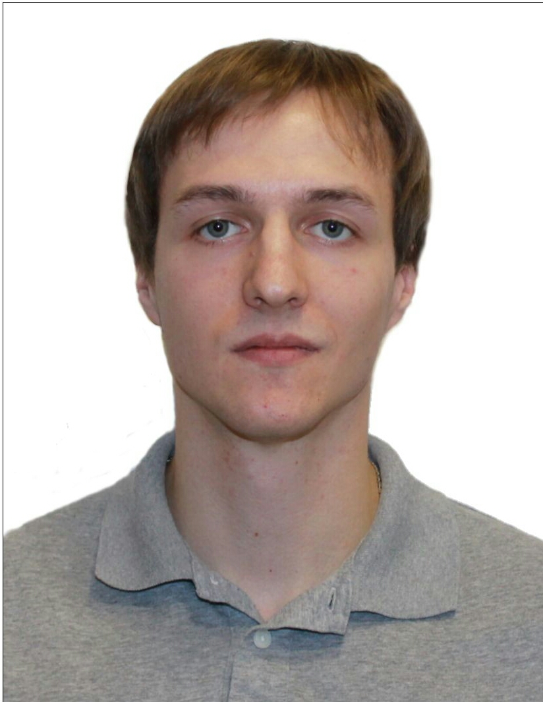

Юрин Дмитрий Сергеевич
Ruby on Rails разработчик.
- Телефон:+7(926)332-39-00
- E-mail: d.s.yurin@mail.ru
- Github
Навыки
- Ruby, Sinatra, Rails
- HTML, CSS
- XML, JSON, SQL
- Rspec
Опыт работы
Программист 1C 8.1 - 8.3
Франчайзи 1С ООО "Артель мастеров" (2014 - настоящее время)
Обязанности:
- Работа с управляемыми и обычными формами платформе 1С Предприятие 8;
- Разработка отчётов в системе компоновки данных (СКД);
- Доработка печатных форм;
- Разработка печатных форм "с нуля";
- Анализ чужого программного кода, выявление ошибок и оперативное их исправление;
- Анализ и ускорение работы программного кода;
- Выполнение различных доработок и исправлений в конфигурациях, решение задач в зависимости от пожеланий
клиента;
- Обучение сотрудников клиента работе с конфигурацией, консультирование, грамотная помощь;
- Составление инструкций для клиента с описанием алгоритмов работы;
- Быстрое реагирование на проблемы с 1С у клиента, исправление ошибок, решение проблем;
- Приём задач от клиента на выполнение различных доработок конфигурации.
Достижения:
- Разработал с нуля и внедрил систему сбора, упаковки и отгрузки товара со склада автозапчастей с помощью
терминала сбора данных по ТЗ клиента (обычные формы);
- Переработал и улучшил систему приёмки товара на склад и перемещения товаров внутри склада. Это позволило
ускорить работу кладовщиков т.к. все решения принимает система 1С, а кладовщику необходимо только следовать
инструкциям на терминале сбора данных;
- Внедрил систему закупки товаров под заявки покупателей с возможностью отслеживания стадии закупки и
внесения
корректировок в заявку;
- Разработал и передал клиенту систему приёмки, упаковки и отгрузки товара со склада под управляемые формы;
- Оптимизировал программный код в различных алгоритмах. Это позволило увеличить скорость работы функций от
20
до 90%;
- Обучил сотрудников принципам работы с хранилищем конфигураций.
Образование
2014, Московский государственный университет пищевых производств, Факультет экономики и предпринимательства,
Прикладная информатика (в экономике)